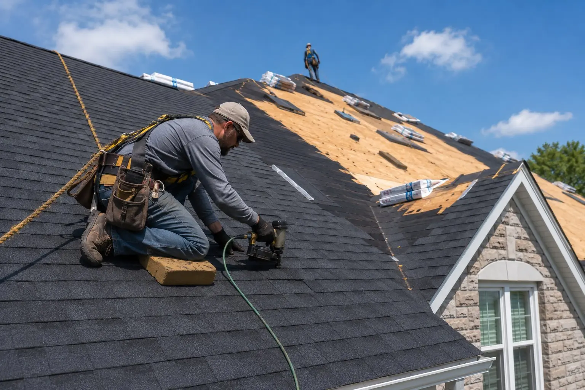
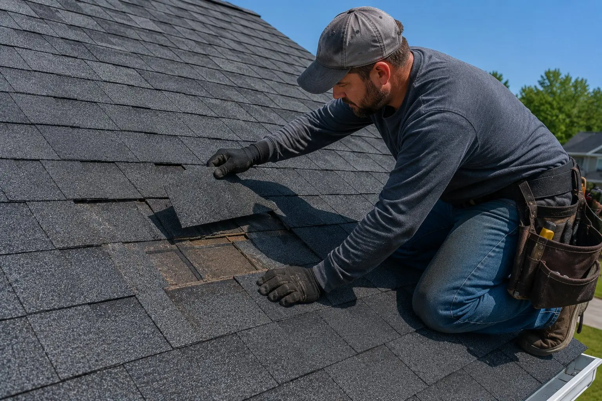
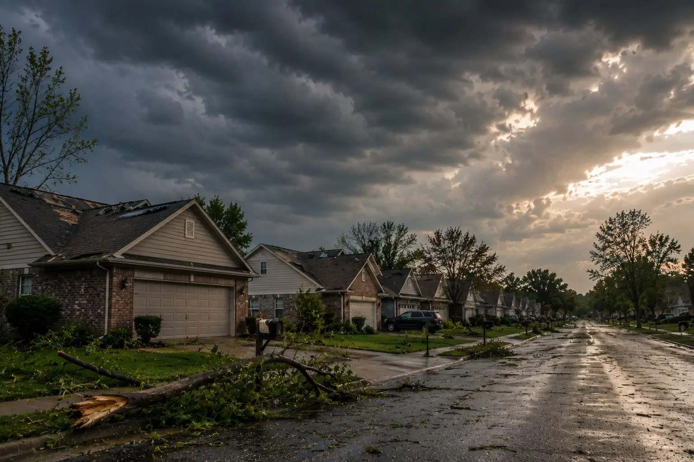
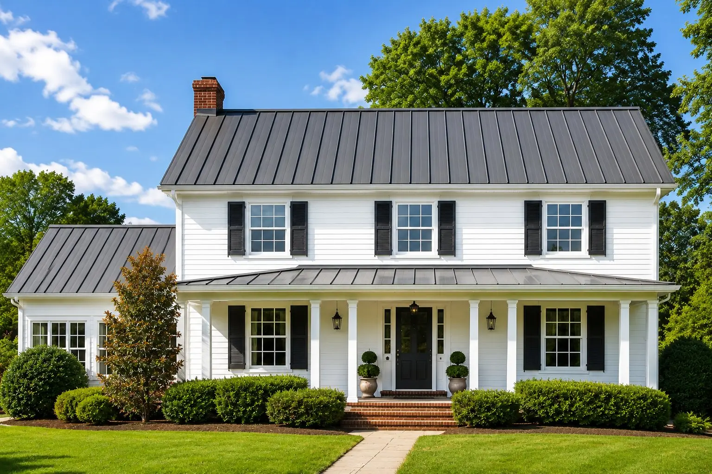
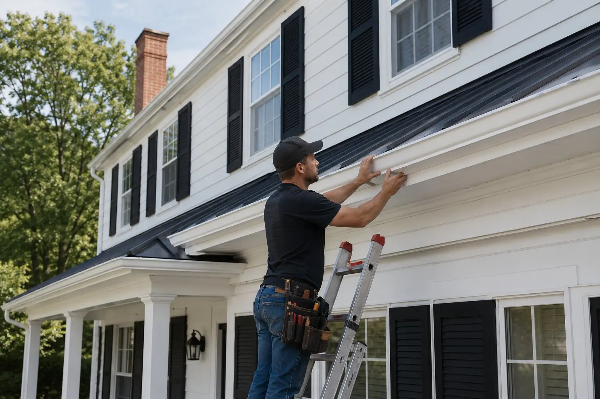
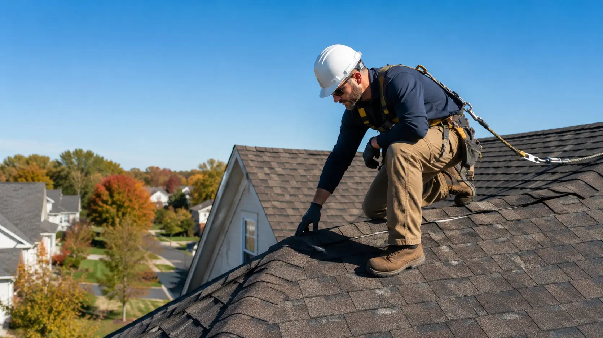
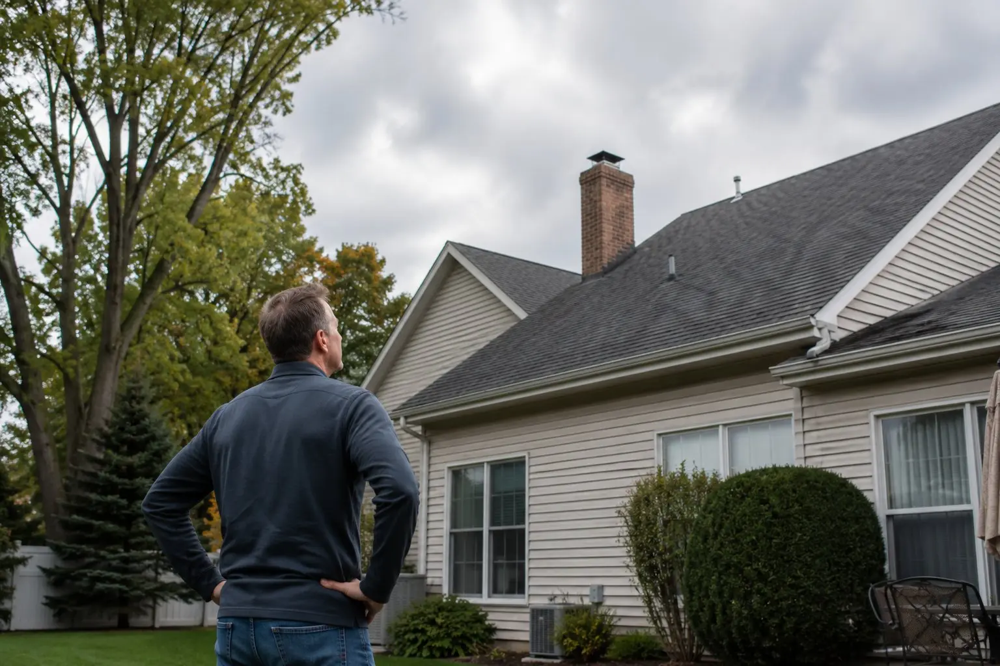

Roof Replacement
Full residential roof replacement using premium architectural shingles built to handle Ohio's storms, freeze-thaw cycles, and summer heat. Completed in one to two days.
Learn MoreNewark Elite Roofing provides expert residential roofing services throughout Newark, Heath, Granville, Pataskala, and all of Licking County, Ohio. Free inspections. Fast response. Quality you can see from the street.
From full roof replacements to emergency storm repairs, Newark Elite Roofing handles every aspect of residential roofing throughout central Ohio.

Full residential roof replacement using premium architectural shingles built to handle Ohio's storms, freeze-thaw cycles, and summer heat. Completed in one to two days.
Learn More
Fast, reliable repairs for missing shingles, active leaks, flashing failures, and storm damage. We diagnose the real problem and fix it right the first time.
Learn More
Hail, wind, and severe weather move fast through Licking County. We respond within 24 hours, document damage for your insurer, and restore your roof completely.
Learn More
Standing seam metal roofing that lasts 40 to 70 years. Superior storm resistance, zero granule loss, and a sharp modern look that dramatically improves curb appeal.
Learn More
Seamless aluminum gutter installation, cleaning, and repair to protect your home's foundation, siding, and landscaping from Ohio's heavy rainfall and snowmelt.
Learn More
Newark Elite Roofing was built specifically for Licking County homeowners. We understand the homes, the neighborhoods, the weather patterns — and the insurance companies that cover this area. When a storm tears through Granville or hail blankets Pataskala, we're already mobilized.
Every inspection includes a full written report with photos. You'll know exactly what your roof needs and why — no pressure, no guesswork.
We work directly with your insurance adjuster, provide comprehensive damage documentation, and ensure your claim covers everything it should.
Every job is fully covered. You're protected before, during, and after the work is complete.
Licking County storms don't wait. Neither do we. We respond within 24 hours and can deploy emergency tarping the same day to stop interior damage.
Ohio storms can cause serious roof damage that isn't always visible from the ground. Hail impacts weaken shingles from the inside — and insurance claims have deadlines. Don't wait. Get a free inspection within 24 hours and let us document everything before your window closes.
Straightforward, transparent, and built around your schedule. Here's what to expect when you work with Newark Elite Roofing.
We arrive on time, inspect your roof thoroughly, document all findings with photos, and walk you through exactly what we found — no charge, no obligation.
You receive a written estimate with material options, timeline, and total cost. No surprise fees, no vague line items. We explain every detail before you make any decision.
Our crew arrives on the scheduled date, protects your landscaping and driveway, and works efficiently from start to finish. Most jobs are complete in one to two days.
Before we leave, we inspect the completed work together. Every shingle, every flashing point, every detail — confirmed to your satisfaction before we consider the job done.
If you're wondering about cost, materials, insurance, or whether you need a repair or full replacement — you'll find straight answers here. For anything else, call us directly.

Still have questions? Our team is available Monday through Saturday. Call us directly for a free, no-pressure consultation.
(740) 527-0222 Request a Free EstimateFrom Newark's historic neighborhoods to the growing communities of Pataskala and Johnstown — if you're in Licking County, we're your roofer.
Check Your Area — Call (740) 527-0222Whether you suspect storm damage, have an active leak, or just want to know the condition of your roof — Newark Elite Roofing provides a free, no-obligation inspection and written estimate throughout Licking County.
We'll contact you within one business day to schedule your free inspection.